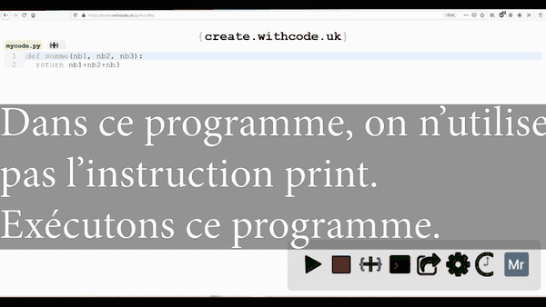

Chapitre 4 – Programmation en Python
Les fonctions
1 Définir une fonction
Une fonction est une sorte de sous-programme : elle prend en entrée plusieurs paramètres et renvoie une valeur en sortie. Partons d’un exemple.
- Instruction 1 :
defpermet de définir une fonction ;sommeest le nom de la fonction, choisi par le programmeur ;- elle prend trois paramètres :
nb1,nb2,nb3, définis entre parenthèses et séparés par des virgules ; - le signe
:marque le début de la fonction. Tout son contenu est indenté.
- Instruction 2 :
returnpermet de retourner (renvoyer) la valeur d’une opération, d’une assertion ou d’une variable ;nb1+nb2+nb3est l’opération dont la valeur est renvoyée par la fonction.
- Instruction 3 : on affiche le résultat de la fonction
sommelorsquenb1vaut 1,nb2vaut 2 etnb3vaut 3.
L’avantage des fonctions est qu’une fois écrites, elles sont réutilisables à volonté. Il est aussi possible de programmer des fonctions sans paramètre (voir les exercices 1 et 2).
En mathématiques, tu utilises souvent des fonctions : tu les appelles directement dans l’interpréteur, ce qui évite d’écrire print ou input et de déclarer les types des variables. Cet usage ne permet cependant pas de répondre à tous les problèmes.

2 Les bibliothèques (modules)
Certaines fonctions sont déjà programmées. Pour les utiliser, il faut indiquer où elles se trouvent. Le fichier qui regroupe un ensemble de fonctions s’appelle une bibliothèque, une librairie ou encore un module.
La bibliothèque random contient la fonction randint(a,b), qui génère un nombre entier aléatoire compris entre a et b.
- Instruction 1 :
from randomindique que l’on charge des fonctions de la bibliothèquerandom;import *les charge toutes (le caractère*signifie « tout »). - Instruction 2 : on affecte à
ala valeur renvoyée parrandint(0,10), un nombre (pseudo-)aléatoire entre 0 et 10. - Instruction 3 : on affiche la valeur de
a.
À chaque exécution du programme, tu obtiens un nombre compris entre 0 et 10.
Pour t’amuser avec ces fonctions déjà programmées, le programmeur consulte la documentation. Voici celle de la bibliothèque random : docs.python.org/fr/3/library/random.html, et la liste des bibliothèques standard de Python : docs.python.org/fr/3/library/index.html.
3 Exercices
Pour les exercices 1 à 4, tu peux « dérouler » les programmes dans ta tête pour gagner du temps.
Teste et « déroule » le programme ci-dessous.
Teste et « déroule » le programme ci-dessous.
Teste et « déroule » le programme ci-dessous.
Teste et « déroule » le programme ci-dessous.
Teste le programme en saisissant les valeurs 3, 4, 5. Il indique que le triangle n’est pas rectangle, ce qui est mathématiquement incohérent. Modifie le programme pour qu’il donne un résultat cohérent.
Voir la correction
Écris un programme avec une fonction nommée parité. Elle prend en entrée un entier nb et renvoie une chaîne de caractères : « Le nombre est pair » si nb est pair, « Le nombre est impair » sinon.
Utilise l’assertion nb%2==0 : elle signifie que le reste de la division euclidienne de nb par 2 est égal à 0.
Voir la correction
4 Exercice complet : Pierre-Feuille-Ciseaux
Teste et « déroule » le programme suivant.
On souhaite créer un jeu de Pierre-Feuille-Ciseaux contre l’ordinateur. On associe la valeur 1 à la pierre, 2 à la feuille et 3 aux ciseaux. Détermine les 9 combinaisons possibles (3 choix du joueur × 3 choix de l’ordinateur, dont 3 égalités) et complète le programme ci-dessous.
Voir la correction
Complète ton programme : le joueur doit pouvoir rejouer tant qu’il ne saisit pas la valeur 0. Utilise une boucle.
Voir la correction
Complète ton programme : crée deux variables qui comptent le nombre de victoires du joueur et celui de l’ordinateur. À la fin du jeu, le programme annonce le gagnant de la partie.